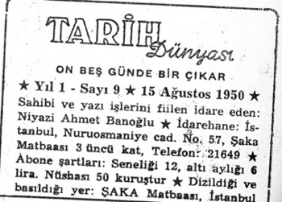
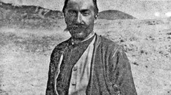
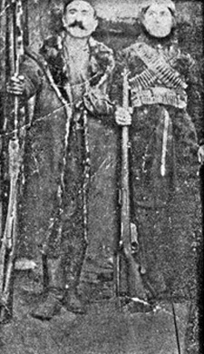
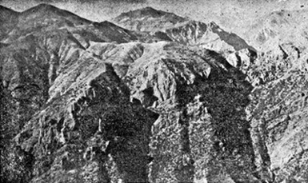
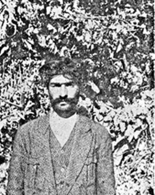
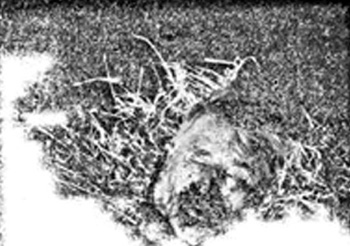
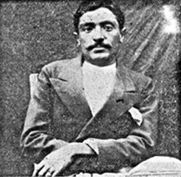

Resmi deyimle “Sel Harekâtı”, Dersimlilerin diliyle “tertele” (katliam, kıyım) olarak anılan Dersim’de “köklü temizlik harekâtı” yapan devlet, 4 Mayıs 1937’de halka ilk bildiriyi yayınlıyor. Zaza ve Kurmanç lehçelerinde kaleme alınan bildiride; halktan, “kendilerini kandırıp ayaklandıran zavallıları ihbar veya bunları yakalayıp hükümete teslim etmeleri; Şekavet erbabının (asi eşkıyanın) silahlarıyla birlikte teslim olmaları; teslim olanların mal ve can güvenliklerinin sağlanacağı; devletin şefkatli elinin masumları koruyacağı ve hiç kimsenin burnunun dahi kanamayacağı; Cumhuriyet rejiminin adil muamelesinden başka bir şey görmeyecekleri; aksi takdirde Cumhuriyet’in kahredici orduları tarafından mahvolacakları” vaat edilmektedir. 1937 tedip ve tenkil (sindirme ve uslandırma) harekâtını izleyen 1938’de direnişin son kalıntıları “kökünden temizlenirken” yine (Kalan aşiretine yönelik) benzeri bir “teslim olma, ihbar etme, devlete sığınıp itaat etme” bildirisi yayınlandı. Bu vaatlere rağmen Dersim’de gerek (yakalanan, teslim olan veya Rehber gibi devlet işbirlikçisi konumundaki) direnişçiler ve daha çok sivil halk tam anlamıyla bir katliamdan geçirildi. Öyle ki, Başbakan Celal Bayar, 1937 sonlarında Atatürk ile birlikte Pertek’e gittiğinde, ilgililerle Dersim’deki kıyımın yeniden devam etmesini kararlaştırmıştı.
Dersim’deki tarihi olayların çok sayıda tanığına rastlamak mümkün. Resmi görevlilerle devlet ricali genelde anılarında bu kıyımı geçiştirirler: 12 Mart 1971 darbesinin döneminin “beyin takımı ve icraat adamı” Şadi Koçaş, 1938 Dersim olayı sırasında öğrenciymiş. Bazı Havacı ve piyadelerin anlattıklarını çok dinlemiş. Ama o, devletin çıkarları açısından bu anlatılanların (can kıyımı) ne olduğunu bir türlü anılarında açıklamıyor. (Ş. Koçaş, Kürtlerin Kökeni ve Güneydoğu Anadolu Gerçeği, 1990) 1971 Askeri Cuntası içinde yer alan Orgeneral Muhsin Batur, Dersim harekâtına genç subay olarak katılmasına rağmen “okuyucularından özür dileyerek, yaşantımın bu bölümünü anlatmaktan kaçınıyorum” diye yazıyor. (M. Batur, Üç Dönemin Perde Arkası: Görüşler ve Anılar, s. 25) Dönemin Başbakanı Celal Bayar, Kasım 1938’de Atatürk ölünce görevinden ayrılıp, kenara çekilir. İstanbul Aksaray’da oturur. Bir müddet sonra izlenildiğini fark eder. Yanılmamıştır; kendisini izleyenler Dersim kökenlidirler. Öldürülmekten korkan Bayar, Çemberlitaş’ta tanıdığı Alevi dedelerinden biriyle görüşür. Alevi dedesi, suikast hazırlığındaki Dersimlileri ikna ederek bu devlet adamını ölümden kurtarır. (Kurtul Altuğ, Bayar’dan Anılar, 15 Eylül 1986 tarihli Tercüman gazetesi) Atatürk’ün manevi kızı Sabiha Gökçen, Dersim harekâtı sırasında Hava Kuvvetleri’nde görevliydi. Tunceli Valisi ve Komutanı General Abdullah Alpdoğan’ın evinde kalmıştı. O, daha açık sözlüdür: “Ufak bir ayaklanmayı bastırmak amaçlanıyordu. Gittik, hedef doğrudan Dersim’di. Havadan ve karadan harekât yapıldı,” demişti. (Nokta, 28 Haziran 1987)
Romancı Kemal Bilbaşar, Hozat Jandarma Alayı’nda yedek subay olarak görev yaptığından yerinde gözlemler aktarabiliyor. Olaydan esinlenerek Cemo ve Memo adlı iki kitap kaleme alan; doğru ile yanlışı bir arada roman kurgusuna aktaran Bilbaşar, “dış mihrakların Dersim meselesinde rolü bulunduğu” yolundaki klişe iddiayı desteklemiyor. Fakat bütün kıyım, talan ve vahşetin kabahatini Hozat’taki Jandarma Sürgünler Alayı’nın “sahtekâr, ırz düşmanı, rüşvetçi, serkeş ve itaatsiz neferlerine” yüklüyor. Bilbaşar, “1938 Dersim Harekâtı’nın Erzincan’ı da içine alacak biçimde genişletildiğini” belirtiyor. Keza, belgesel roman yazarı (sol Kemalist) Hasan İzettin Dinamo, Kutsal Barış isimli eserinin 3. cildinde, Dersim’de can kırımının yaşandığını şu cümleyle anlatıyor: “Yarbay Kemal’in sivillere, sığınanlara iyi davranılması için verdiği kesin buyruğa bakmadan pek çok sığıntıyla çoluk çocuğun, gözü kararmış savaşçıların (askerlerin -F.B.) hışmına uğradığı görülüyordu. Dersim bölgesinde hiçbir canlının barındırılmaması üstüne verilen karar, sert biçimde uygulanıyordu.” Dinamo, kabahat ve suçun planlı değil; “gözü kararmış birtakım askerlerin kötü işleri” olduğunu savlıyor. Nefret Köprüsü, Dersim 1937, Dersim 1938 adıyla üç kitap yazan Barbaros Baykara, olayı bir resmi istihbaratçı söylemi ve kurgusu içinde ele alarak işliyor ki, özünde çarpıtılmış bir konuyla karşı karşıyayız.
Siyaseten katledilen Kürt bilgesi Musa Anter, Hatıralarım isimli kitapta, dolaylı biçimde tanık (bizzat şahitlerden duydukları) olduklarını aktarırken; “Dersim’de bir katliam yaşandığını” vurguluyor. Şükrü Laçin İkinci Dersim Harekâtı sırasında 13 yaşında bir çocukken, Bir Kürt İşçisinin Siyasal Anıları: Dersim İsyanı’ndan Diyarbakır’a başlıklı yaşamöyküsünde, bulunduğu aşiretin başkaldırıya katılmamakla birlikte; yaşadığı köydeki insanların (ve ailesinin) zincirlenerek askeri toplama kamplarına gönderilmeleri hakkında ayrıntılı bilgiler sunuyor. Subayla olan diyaloğunu ve köylülerin canlarını nasıl kurtarmayı başardıklarını aktarıyor. Laçin’in anılarında dikkati çeken şey; ilgili subay veya görevlilerin, Cumhuriyet ideolojisiyle iyice bilenmiş olmalarıydı. Buna göre; Dersim ilkel, geri ve vahşi bir yöredir: Burada seyitler, ağalar, mollalar ve beyler cirit atıp halkı hem sömürmekte hem de devlete karşı isyan ettirmekteler. Devlet açısından “baş düşman” anılan kişilerdir: “Okur yazar olmak ve Türkçe bilmek” uygarlaşma ölçütü sayıldığından; ilgili görevliler, Türkçe bilen ve okur yazar olanlara karşı daha yumuşak davranır; onları “Türk aslına dönmenin başlangıcı” kabul ederlermiş.
Türk-İslam sentezinin bu ünlü isminin Son Devrin Din Mazlumları kitabında yapılan katliamlara ilişkin yazdıkları şöyle:
“Elazığ Ortaokulunda okuyan iki çocuk... Tatili geçirmek üzere memleketleri olan Hozat’a geliyorlar ve facianın tam üstüne düşüyorlar. Hozat yakınlarındaki köylerine geldikleri zaman babaları Yusuf Cemil’in öldürtülmüş olduğunu öğreniyorlar ve ağlamaya başlıyorlar. Onlara şu karşılık veriliyor:
‘Sizi de onun yanına götüreceğiz!’
Çocuklar odadan sürükletilerek çıkartılıyor ve jandarma muhafazasında gittikleri yolda süngületiliyorlar. Böylece babalarının yanına gönderilmişlerdir.”
Evet babalarının yanlarına yolluyorlar. Belki de bir paket sigara için yapılıyor. Nasıl olsa öldürmek suç değil. Öldürmemek suç. Emir Mustafa Kemal’den Başbakan’a, Başbakan’dan Genelkurmay Başkanlığına, oradan da subaylara, onlardan da erlere. Suçlu doğrudan devletin kendisi. ‘Biz emir kuluyuz’ demek suça ortak olmamayı getirmez. Doğrudan insanlığa, halka, millete karşı işlenen affedilmez bir zalimlik, zorbalık var ortada.
Orada bir politika uygulanıyor. Türk egemenliği güçlendirilmek isteniliyor. Merkeziyetçilik egemen kılınıyor. Katliamların nedeni bu.
Kendilerine karşı gelinsin-gelinmesin Kürtler katledilmek, yok edilmek isteniliyor. Askerin pervasızlığına, kendi başına hareketine devlet izin vermiş. Her şeyi hiyerarşi içinde yürütülüyor.
Necip Fazıl’ın ilginç anlatımları şöyle devam ediyor;
“Her evi ayrı ayrı tutuşturulduktan sona dört bir etrafı ayrıca çalı çırpı içine alınıp alev alev yakılan bir köyden, deli gibi bir adam çıkıp çalı yığınları gerisinde manzarayı seyredenlere doğru ilerliyor ve haykırıyor:
‘Durun ben köy ahalisinden değilim! Öğretmenim, müsaade edin, kendimi size isbat edeyim!’
Fakat sözüne karşılık bir kalasla itilerek alevler içine atılması oluyor. Adamın, evvela göğsünün kılları tutuşarak alev alev yanarken, çalı yığınları gerisinde amir, zevk ve keyifle sigarasını içmektedir. (Bu vak’a, bana 1944 yılında, Eğridir’de askerliğimi yaparken, resmi şahıslar huzurunda, yanan adama karşı sigarasını zevkle içtiğini söyleyen amirden bizzat dinleyenlerce anlatılmıştır.”
Türk politikasını egemen kılma uğruna öğretmenlik yapan birisinin de katledilişi ilginç. Dersim’de sivil görmek istemeyenler, izinli bir Dersimli askeri katletmekten kaçınmazlar:
“Yusuf Cemil’in köyünden 200 kadın ve çocuk öldürülmüş ve bunların cesetleri buğday sapları üzerinde yakılmıştır. Öldürülenler arasında, Elazığ’da askerliğini yapan ve o sırada izinli olarak köyünde bulunan Rüstem adında biri de vardır. Bu zavallı, mezun olduğunu ve isterlerse hüviyet ve izin kağıdını da gösterebileceğini söylediği halde derdini dinletemiyor ve dört çocuğu ile seksenlik anası arasında, onlarla beraber kurşunlanıyor.
Para için cinayet:
Hozat’ın Karaca köyünden Cafer oğlu Kasım. Bu adam, o tarihten 30 sene evvel Amerika’ya gitmiş, orada 15 yıl kalmış, epeyce para kazanmış ve sonra köyüne dönmüştür. Kasım, Amerika dönüşünde, Birinci Dünya Harbi’nde Kafkas cephesi Köprüköy muharebesinde şehit düşen kardeşi Yüzbaşı Şükrü’nün iki çocuklu dul karısı Şirin Hatunla evlenmiş, Hozat’a gelip yerleşmiş, orada bir mağaza açmış ve ticarete başlamıştır. Hükümetle de bazı ticaret işlerine girişmektedir. Dersim hareketi esnasında, işbu Cafer oğlu Kasım, taahhüt bedelinden alacağı olan 6.000 lirayı tahsil etmek üzere Ovacık Kaymakamlığı’na müracaat ediyor. Muamele işlemini yaptırıp parayı kendisine veriyorlar. Muamele biter bitmez ‘Seni Hozat’tan çağırıyorlar!’ diyerek, onu, muhafızlı yola çıkarıyorlar. Cafer oğlu Kasım, kasabadan ayrıldıktan bir saat sonra jandarmalara öldürtülüyor. Koynundaki 6.000 lira da, iki alakalı idare amiri arasında taksim ediliyor.
Zavallının zevcesi(eşi) Şirin Hatun, o esnada, dört çocuğuyla birlikte, komşularına oturmaya gitmiştir. Kadın, evine döndüğü zaman bir de görüyor ki, kapısı kırılmış ve bütün eşyası etrafa dökülüp saçılmıştır. Haykırmaya başlıyor.
‘Yetişin, evimize eşkıya girdi!..’
Bu feryadına karşılık olarak kadın, kapısının önünde, çocuklarıyla beraber öldürülüyor ve dolgun miktarda altını, parası ve eşyası yağma ediliyor.”
Benzer şekilde Kıbrıs Türklerce 1974’de işgal edildiğinde asker birçok yeri yağmalıyor. Geleneği bu. Dersim’de önceki yıllarda yapmasının yadırganacak bir tarafı yok.
Bu arada, Hozat’ın Zımbık köyünde ‘Şekspir’in hayaline bile taş çıkartacak bir vak’a (olay) cereyan etmektedir. Erkekleri tamamıyla doğranmış olan köyün 100 kadar kadın ve çocuğu, sivri uçlu aletle (süngü) öldürülüyor. Öldürülen kadınlar arasında, biri doğurmak üzere bir gebedir. Bu kadının karnına giren sivri uçlu alet, bağırsaklarını yere döküyor, rahmini parçalıyor ve kendisini öldürüyor. Tehlike geçtikten sonra gizlendikleri yerden çıkan birkaç kadın, ölüleri gözden geçirirken, bu kadının rahminden düşen çocuğun sağ olduğunu dehşetler içinde görüyorlar. Muazzam bir Kader cilvesi olarak yaşama devam eden çocuğu alıyorlar, emzirtip büyütüyorlar ve ona “Besi” adını koyuyorlar Bu kız bugün hâlâ aynı köyde ve hayattadır. Sivri uçlu alet annesinin karnına girip rahmini deldiği zaman da onun topukçuğunda bir yara açmıştır ve kız hâlâ bu yarayı topuğunda taşımaktadır.
24 yıl evvelki Dolantanır köyünden Veli isminde bir genç, Elazığ Muallim Mektebinde (Öğretmen Okulu) okuduktan sonra öğretmen olarak Trakya’ya gönderilmiş, orada evlenmiş, 3 çocuk sahibi olmuş ve tam da Dersim hareketi başlamak üzereyken, karısı ve çocuklarıyla yaz tatilini geçirmek üzere köyüne gitmiştir. Genç muallimin köyü, erkekli ve kadınlı çocuklu ve ihtiyarlı, doğranırken, kendisi, karısı ve çocukları da aynı sona mahkûm edilmiş ve cesetleri yakılmıştı.
Amaç jenosit olunca, kurtulmak artık şansa kalıyor. Tek tek karşı çıkışlar, direnmeler, öksüzlük, dağınıklık ve ihanetler sonucu çok az görülür. Birbirlerinin dertlerine ortak olunmayacak bir kaos vardır. Halk çaresiz, korumasız, savunmasız, aç ve perişandır. Hızır’a, Düzgün Baba’ya, Kureyş’e dualarla kurtulmayı umar. Birlik yapmamanın, yapamamanın bedelini ağır öder.
“Mazgirt Tersemek (Türüşmek olmalı) nahiyesinin halkını doğranmakta merhamet sahiplerinden biri, birle on yaş arasında 20 kadar çocuğu alıp bir derenin içine saklamıştır. Durum birden haber alınıyor. Çocukların öldürülmeleri emri veriliyor. Fakat bu emri yerine getirebilecek kimse ortaya çıkmıyor. En katı yürekliler bile, böyle müdafaasız masumlara silah kullanamayacaklarını söylemeye mecbur kalıyorlar. Tecrübe birkaç defa başarısızlığa uğruyor ve hayli sıkıntı mevzuu oluyor. Nihayet, en kara yüzlü çingeneden daha karanlık suratlı bir adam bulunuyor ve bir dere içinde titreşe titreşe bekleyen 20 masumun işi bitiriliyor.
“Murat Suyu’nun (Munzur olmalı) kandan kıpkızıl aktığını görenler olmuştur.
Celal Bayar’ın Başvekil ve Mareşal Fevzi Çakmak’ın Genelkurmay Başkanı bulunduğu 1938 yılında cereyan eden Dersim faciası, bütünleştirilmesini okuyucularımızın hayaline ve istikbaldeki tarihçinin kalemine bıraktığımız birkaç teferruat (ayrıntıyı) çizgisi halinde budur.”
Tarihin diğer tanıklarına gelince; onların bir kısmı olaya bizzat tanık olmuş, bazısı da meseleyi ikinci elden duyup aktarmışlardır. Biz, bu kesimin anılarına daha fazla önem verdik.
Karslı Asker: Toplayıp Derelerde Katlediyorduk
Süvari olarak Dersim’de bulunan Karslı A. Demirtaş, görüp ettiklerini pişmanlık içinde anlatıyor:
“Köylüleri topluyorduk. Bir araya getirip, ‘Sizi koruyacağız, kurtaracağız’ diyerek dere kenarlarına veya uygun gördüğümüz yerlere götürüp makineli tüfeklerle tarıyorduk. Kadın, çocuk, bebe, ihtiyar, genç demeden hepsini öldürüyorduk. Subaylar, ‘Hiçbir Alevi’yi sağ koymayın, öldürün’ yolunda emir veriyorlardı. Daha sonra erler, cesetlerin başlarına kurtlar gibi üşüşüyorlardı. Kollarını sıvazlayıp bilezik, kolye gibi ziynet eşyasını kapmak için hırslı bir yarış başlıyordu. Kadınlar için altın takmanın önemi büyük olduğundan kolları parçalanarak, kesilerek altınlar kapışılıyordu. Hatta altın dişler bile sökülüyordu. ‘Alevi öldürüp cennete gitmek, bu arada altınlarına el koyarak dünyada rahat etmek’ o günlerde önemliydi. Velhasıl, birçok köyde benzer şeyler yapıldı. Bugün Kars’ta Dersim (soygun ve talanından) zenginleri var.”
Dersim’den bir genç kız götürmek isteyen A. Demirtaş, komutanı tarafından azarlanır: “Biz onları yok etmek isterken, sen yaşatmak istiyorsun!” Bütün yalvarmalara rağmen söz konusu genç kız katledilir.
Karslı A. Demirtaş devam ediyor:
“Bir gün, 4-5 yaşlarında bir çocuğu komutan bana göstererek ‘Öldür’ dedi. Ben ‘Yapamam’ deyince, yüzbaşı rütbesindeki komutanım çocuğu ayağından tuttu. Güçlü ve kuvvetli elleriyle yanı başındaki kayalara başı gelecek şekilde kaldırıp, kaldırıp vurmaya başladı. O an hafızamı kaybetmişim. Kendime hastanede geldim. Hava değişimi verdiler. Bir daha Dersim’e yollamadılar. Çünkü her şey bitmişti.”
Çiğik köylerinden olan M. U. şimdi (1988) 50’sinde. Bir yaşındayken askerler gelince annesi telaş, korku, panik içerisinde onu bırakır kaçar. Dedesi, yolda annesine rastlar ve “Bebek nerede” diye sorar. Annesi kendisinin bırakıldığı yeri söyler. Yaşlı adam, bırakılan yere gider. Torununu bulur. Açlık ve susuzluk, kendisinin sürekli ağlamasına neden olduğundan yabani üzümlerin suyunu tek tek bebeğin ağzına sıkarak, yaşamasını sağlar. Özellikle birçok bebeğin ağlaması sonucu bulundukları yerleri tesbit edildiğinden, köylüler bebekleri bırakırlar. Çoğunluğun çıkarına feda edilirler. Bebekler bulunduklarında süngülenmekten kurtulamazlar.
Karslı A. Demirtaş, katliamların yapıldığı sırada unutamadığı bir diğer görüntüyü de şöyle anlattı:
“Yine bir gün cesetlerin arasından bir çocuk sağ olarak çıktı. Tahminen 5-6 yaşlarındaydı. Eliyle sürekli gökyüzünü işaret ediyordu, ‘yukarıda Allah var, korkmuyor musunuz?’ gibisinden. Taranarak öldürüldü. Unutmak mümkün değil.”
Yine Dersim’e ilişkin anlattığı bir olay tüyler ürpertici, inanılması güç fakat ne yazık ki gerçek:
“Bir katliam sırasında ana ve babaların öncelikle çocuklarını kurtarmak için kendilerini siper ettikleri biliniyordu. Tecrübeden. Askerler hiç kimsenin canlı kalmaması için, makineli tüfekle taradıktan sonra cesetleri süngülemekte veya bazen benzin dökerek yakmaktaydı. İşte yine bir katliam sonrası benzin döktüler. O sırada bir çocuk cesetlerin arasından çıktı, birkaç adım attı, fakat etrafta askerlerin olduğunu görünce tekrar cesetlere doğru dönüp yürüdü tam o sırada benzin ateşlendi ama O alevlere doğru yürüdü ve kendini atarak yaktı, donup kalmıştık. Subayın sesi ve emirleri üzerine toparlandım.”
“Babamın Cesedine Ağlayamadım”
Laç deresinden kurtulanlardan biri olan A. G. ise, “o sırada 10 yaşında olduğunu, etrafları kuşatılınca babasının kendisine seslenerek iki kayanın arasını gösterdiğini ve oraya görünmeden gizlendiğini, silah sesleri, bağırtılar, iniltiler arasında geçmeyen dakikaları yaşadığını; askerlerin gitmesinden sonra ortalığın sessizliğini ve üst üste yan yana cesetlerin arasında babasının cesedini gördüğünü ama karşısında ağlayamadığını, durup bir müddet baktıktan sonra hızla kaçtığını; gündüzleri saklana saklana yol aldığını; üç gün sonra kendisi gibi saklananlara rastlayarak onlarla birlikte hareket ettiğini” üst üste sigaralar içerek anlattı. Daha fazla bir şey soramadım, çünkü anlatamadı.
Savaşmadığımız Halde Neden Öldürdüler?
Alan aşiretinden İbrahim T.’nin anlatımları savaşılmayan bölgeye ilişkindi. O, nehrin öteki yakasından olanlardandı. Yani savaşmayan aşiretlerden, ama gizlice savaşçılara yardım ettiklerini söylüyordu:
“Bir gün evimize yaralı bir Demenanlı geldi. Fakat kısa bir müddet sonra askerlerin de köye doğru geldiklerini gördük. Hemen herkes sağa sola kaçıştı, gizlendi. Yaralı Demenanlı ceviz ağacının üzerine çıkartıldı. Ben de ceviz ağacının üstüne çıktım. Askerler arama yaptılar, tam gidecekleri sırada, tam bu sırada bir askerin önüne yaralının kanı düştü. Asker kafasını kaldırınca Demenanlıyı fark etti. Ben korkudan ölüp ölüp dirildim. Fakat asker, beklemediğimiz bir davranışta bulunarak işaret parmağını dudaklarının üzerine götürüp sus işareti yaptı. Donup kalmıştık. Çünkü savaşçıların saklanması, korunması da ölümdü. Aynı asker giderken ‘ben de Kürdüm’ dediğini hiç unutamıyorum. Babam ve annem birçok köylü gibi ekmek hazırlayarak yoldan geçen köylülere verirlerdi. Asker geldiğinde çoğunlukla ormanlara kaçardık, yine de köyümüzden birçok kişi öldürüldü. Peki savaşmadığımız halde neden öldürdüler?”
“Neden savaşmadınız?” dediğimde; “Büyüklerimiz isteseydi, biz savaşırdık” diyerek o günün koşullarını anlattı. C. M., Dersim katliamı sırasında Elazığ garında büfesi olduğunu, şehirde önceden tanıdığı Nuri Dersimi’yi birkaç kez gördüğünü, kendisine “her zaman izlendiğini bu nedenle dikkatli ve tedirgin, olduğunu” belirttiğini; Dersimlilerin Baytar Nuri’yle ilişki kurmaktan çekindiklerini, evimize misafirler geldiğinde başından geçenleri sık sık anlatırdı. Hatta başına “adliyede tabanca dayandığını fakat kendisini tanıyan bir hakimin tesadüfen odaya girmesi sonucunda ölümden kurtulduğunu; Dersimli olmanın suç sayıldığını; kendisinin de sürgün listesine yazıldığını; ama kendisini kurtaran hakim aracılığıyla ismini sildirdiğini de söylerdi. Sürgüne gitmenin utanç verici olduğunu düşünerek gitmemeye çalıştıklarını, Elazığ’daki Dersimlilere ait evlerin kapılarının işaretlendiğini” tekrar tekrar anlatırdı.
Subaylar Bile Delirdi…
M. Nuri Dersimi’nin aktardığına göre, askerler ve subaylar arasında bile tüyler ürpertici katliamlar karşısında insana özgü davranışlar gözükür:
“Askeri harekât sahasında bulunan Erzurum Kolordu Kumandanı ve Türklerce ‘Hababam’ adıyla maruf Tevkif Paşa, yapılan mezalimi tenkit ederek (vahşeti eleştirerek) adil ve insani bir hareket icrasını ordu kumandanlığından rica etmiş olduğundan, hemen Dersim’den çektirilerek Ankara’ya gönderilmiş ve sorgu altına alınmıştı. Aynı Kolordu subaylarından binbaşı Hayri, Dersimli Kürt kafilelerinin mitralyöz ateşine tutulmalarını dürbünle seyrederken; annelerinin kucaklarındaki zavallı yavrulara kurşun isabet ettiği zaman hoplayıp zıplama manzarası, bu yavrulardan birini kendi öz çocuğuna benzetmiş. Subayın beynini öyle tahriş etmiş ki; bedbaht ani olarak bayılıp yere düşmüş. Bu hadise üzerine hastalanan ve delilik alameti gösteren subay, cephe gerisine aldırılmış. Bazı aktarımlar için bkz; M. Kalman, Dersim Direnişleri, s. 393-95)”
Canlı Bırakmayınız Demişlerdi…
Nurcu emekli albay Hacı İbrahim Hulusi Yahyagil, Necmeddin Şahiner’in kaleme aldığı Son Şahitler Bediüzzaman Said-i Nursi’yi Anlatıyor kitabında Dersim meselesine değiniyor:
“1938’de bizi, Dersim isyanını önlemeye ve bastırmaya memur etmişlerdi. İsyan dedikleri şey de, bazı dağ köyleri o yıl vergi vermemişti. Bize verilen emir, tek kelimeyle şuydu: İmha!
Canlı bir şey bırakmayınız; genç, ihtiyar, çocuk kadın vesaire. Bunların çoğu Rafızi (Aleviler kastediliyor) idi. Fakat bu tarz bir muamele ile, bunlar iyilik mi bulacaklardı? Ben kıta komutanı idim. En çetin ve zor vazifeyi de bize verdiler. Sen piyadesin, seni topla takviye etmek gerekir, dediler. Müthiş hüzün ve ızdırap içinde idim. Hz. Üstad (Said-i Nursi’yi kastediyor) benim hüznümü hissetmiş. Bu durumu kendisine yazıp soramadım. Nasıl yazabilirdim? Bu ızdırabımı kağıda nasıl dökebilirdim? Tam merhum pederimle vedalaştım. Hayvana bindim gidiyordum. Bir de baktım, hizmet eri koşarak geldi, elime bir mektup verdi. Mektubu açtım. Mektubu Üstad Kastamonu’dan Ürgüp Müftüsü olan kardeşi Abdülmecid vasıtasiyle gönderiyordu:
‘Hulusi’nin bir sıkıntısı var diye hissediyorum. Merak etmesin. Risale-i Nur’un öğrencilerine dikkat ve rahmet, nezaret ve himayet ederler. Dünyanın zorlukları madem sevap verir, geçerler, o ansızın gelen belalara karşı sabır içinde, şükür ile, metanetle mukabele edilmek gerekir. Hem o, hem sizler, bütün dualarımda ve kazançlarımda benimle berabersiniz.’
Az sonra isyan olan bölgeye gittik. Döndük dolaştık. O bölgeyi terk etmişler, dağlara, mağaralara çekilmişler. Rahmet-i ilahiye yardımımıza yetişti. Elimizi kirletmeden ve kana bulaştırmadan bizi kurtardı.”


Dersimin Erkani Harbi (genelkurmayı) diye anılan ve
Alişiri öldüren gene Dersimli Zeynele (Topi)
Yakın tarihin esrarla örtülü hâdiseleri ve Koçkirili Alişir:
Bu yazı, yakın tarihin şimdiye kadar bir esrar perdesiyle örtülü kalan Dersim isyanının içyüzünü aydınlatmaktadır ve bu isyanın elebaşılarından Alişir hakkında şayanı dikkat malûmat vermektedir. Şimdiye kadar hiçbir yerde neşredilmemiş malûmatı ihtiva eden yazı, aynı zamanda Cumhuriyet devri tarihini yazacak istikbalin tarihçisine son derece meraklı ve faydalı vesika teşkil edecektir.
Dersim’in tarihçei seyyiatında (kötülük tarihçesinde -F.B) böyle bir isim de vardır:
Alişir, öldüğü zaman (9 Temmuz 1937) tahminen elli beş yaşlarında idi. Alişiri ilk defa siyaset ve mel’anet (lanetli kötülük) sahasında, Koçgiri aşireti reisi Mustafa (Paşa)nın kâtibi olarak görüyoruz. Dersim havalisinde tanınması, Birinci Büyük Harpte Erzincanda Ruslarla teşriki mesai ettiği zamana tesadüf eder. Erzincanda Rusların et müteahhidi olarak ortaya çıkan Alişir, Rus komutanlığından orduya sığır mubayaa etmek (satmak) üzere yediyüz Türk altını, yanına da bir manga kadar Rus askeri ve on mekkâre (yük katırı) almış, Munzur dağlarını aştıktan sonra, Rusların elinden hayvanlarını gasb ve askerlerden de üçünü esir ederek Dersim’e yürümüştür. Bu hâdise, esasen Türk düşmanı olan Erzincandaki Rus komutanı Lahof’un büsbütün Türkler aleyhine harekete geçmesine sebep olmuştur.

Alişir karısı Zarife ile dağlarda silahlı
gezdikleri zaman
Alişir, Dersime geldikten sonra “Ovacık”daki milis alayının kâtibi olmuş, alayın Rusları önlemek üzere Munzur dağı mıntıkasına hareketinde beraber gitmiş, bir müddet de “Sebil Baba Dağı”nda kalmıştır.
Büyük Harpten sonra Koçkiri’ye avdet eden Alişir, eski vazifesi olan Koçgiri Aşireti Reisi Mustafa “Paşa”nın oğlu Alişan Beyin kâtibliğini deruhde etmiştir. İşte Alişiri burada, memleket ve devlet aleyhindeki hareketlerin başında bir dimağ olarak görmek üzereyiz. Alişiri, Koçgiri Aşireti Reisi Mustafa “Paşa” kendisinde bazı istidadlar (yetenekler) görerek yetiştirmiş, onu bilhassa sık sık Dersime göndererek Dersim aşiretleri üzerinde müessir (etkili) ve faal olmasını temin etmiştir.
Alişir; zeki, fesadcı ve cesurdur. Çok güzel Türkçe okur, yazar. Dersimde elimize geçmiş bir çok siyasî ve hicvâmiz (alaycı, yerici) manzumeleri vardır. Kendisine bu diyarın halaskarı süsünü vermiş, daima öyle görünmek istemiştir. Onda Kürdlük fikir ve emelleri de vardır. İşte bu fikir ve emellerdir ki, büyük harp mütarekesini müteakip Alişiri, bütün kirli ve fesadcı emellerile ortaya çıkarmıştır.
Sevr muahedesine, Kürdlerin ekseriyet teşkil ettikleri yerlere muhtariyet idare verileceği mealinde bir madde konulmuş olması Kürdleri ümidlere düşürmüştü (umutlu kılmış). Bu sırada Koçgirili Mustafa “Paşa”nın oğlu Haydar Bey İstanbula giderek Kürd Teali Cemiyetine girmiş, Koçgiri’ye avdetinde (dönüşünde) “Ümraniye”de cemiyetin bir şubesini açmıştı. Şubenin riyasetini de deruhde eden (başkanlığını yapan) Haydar Bey, Dersimdeki aşiret reislerile sair müteneffizleri (diğer nüfuzlu ve etkili kimseleri), Koçgirinin ileri gelenlerini cemiyete kaydetmiş, Kürd amaline müteallik (amaçlarına, emellerine ilişkin yazılı) eserlerle beraber cemiyetin naşiri efkârı (fikir organı) olan Kürdçe “Jin” gazetesini de getirterek işe bu noktadan hız vermişti. İyi bilmek lâzımdır ki, Haydar Bey bu işleri yapacak, başarabilecek bir adam değildir. Perdenin arkasında Alişir vardır, asıl faal, muharrik (tahrik edici, harekete geçirici) olan odur.
Nihayet Alişiri, 1920 senesi Martında maskelerini atarak, hakikî siyasî hüviyetile (kimliğiyle) Dersimde Ovacık ve Hozatta halka tahrikâmiz (kışkırtıcı) hitabeler verirken görüyoruz. Yanında Refahiyenin Şadilli aşireti Reisi (Paşa Bey) ve arkadaşları var. Alişir, bu cür’eti (cesareti) Kürd Teali Cemiyeti Reisi (Seyyid) Abdülkadir’den almıştır. Çünkü Dersime gelmeden bir müddet evvel, Koçkiri’nin Armudan köyünden Mıgırdıç isminde bir Ermeniyi sureti mahsusada (özellikle) İstanbula göndermiş, bu vasıta ile Seyyid Abdülkadirden talimat almıştır.

Alişirin uzun müddet sığındığı Munzur dağları ve içine girilmez mağaraları
Alişir, Dersimdeki konuşmalarını Türkçe yapmıştır. Dersimliler ve Koçgirililer “Zaza”ca konuşurlar. Fakat aralarında lehçe farkı vardır. Bu sebeple Koçgirili Zaza Dersimli Zazanın söylediğini anlayamaz. Alişir, Kürdçe de yazmış, şiirler söylemiştir. Bunlar da ayni sebeple Dersimde yer tutmamış, okunamamış, bellenememiştir. Bunun içindir ki, Alişirin fikrî faaliyeti Dersimi çorak bulmuştur.
Alişir; fesadcı sözlerile Ovacık ve Hozatta tahmin ettiği alâka ve temayülü (ilgi ve eğilimi) bulamamıştır.
Dersim denizinde fırtına ancak kendi reislerinin işaretile kopar. Zaten Dersimliler daha evvel, büyük devletlere telgraf çekerek Osmanlı hükümetinden ayrılmak istemediklerini bildirmişlerdi. Alişir, buna da bir sebep bulmakta gecikmedi. Denildi ki, Osmanlı memurlarının tesirile, Dersimliler hakikî emellerini izhar (gösterememişler) edememişlerdir. Maksadları müstakil (amaçları bağımsız) Kürdistan hükümetine iltihak etmek (katılmak) ve onun özünü teşkil etmektir. Alişir tarafından bu mealde hazırlanan muhtıra Kürd Teali Cemiyeti vasıtasile büyük devletlere gönderildi. Ne garip tecellidir ki, bu sırada Koçgiri aşireti reislerinden Alişan Bey Refahiye kaymakamlığı vekâletinde bulunuyor, kardeşi Haydar Beyin ve bilhassa Alişirin siyasî faaliyetlerinden güya habersiz, onlarla tamamen alâkasız bulunuyordu.
Alişirin Dersimde ektiği fesad tohumları bu sırada filiz vermeğe, tesirini göstermeğe başladı. “Ezcümle Ovacık kazasının Tarpazin nahiyesi eski müdürü Mustafa Ağa, Kemah köylerine gelerek asker toplanmasına Padişahın emri olmadığını, Dersimlilerin asker vermiyeceklerini, Kemahlıların da vermemelerini” tenbih etti (uyardı, öğütledi) ve bunu temine çalıştı. Artık isyan fikri umumileşmişti (genelleşmiş).
Elâziz vilâyetinden, garbî (batı) Dersim aşiretlerine bir Nasihat Hey’eti gönderildi. Hey’etin izamını (gönderilmesini) zaaf nişanesi addeden (zayıflık işareti sayan) Şeyh Hasanlı ağaları, giden zevata karşı çok barid (soğuk) davrandılar ve şu yolda cevap verdiler:
“Sevr muahedesi mucibince (gereğince) Elâziz, Diyarıbekir, Bitlis, Van vilâyetlerinde müstakil (bağımsız) bir Kürdistan teşekkül etmesi lâzım geliyor. Bu teşkil edilmelidir. Aksi takdirde bu hakkı silâh kuvvetile alacağız” dediler. Birkaç bin Dersimlinin Sivas vilâyetine hücum ve orayı işgalden sonra Ankara üzerine yürüyeceklerini ifşa eylediler ve faaliyete girişerek her tarafta yağmacılığa başladılar. Ezcümle Belican nahiyesinin Karaibo köyünden Deli Esad oğlu Rifat yirmi kadar avenesile (yandaşı, yardımcısı), ahalisi Türk olan Günlü çiftliğini bastı, sekenesinin (yerlisinin) bir çoğunu öldürdükten, emvalini (mallarını) de yağma ettikten sonra çiftlik halkına hitaben: “Siz Ermenilere yaptınız, biz de size yapıyoruz. Dersim aşiretleri geliyor. Biz Sivası işgal edeceğiz ve sonra Ankaraya gidip millî hükümeti (ki buna kongre diyorlardı) de devireceğiz.” dedi.
20 Teşrinievvel 1336 (20 Ekim 1920) tarihinde Dersim aşiretlerinden Bezgâr aşireti şakileri Giresundan Kemaliyeye gelmekte olan bir yolcu kafilesini Kuruçay’ın Kımhu mevkiinde soydular. Civarda askerî kuvvetler olmadığından Refahiye Kaymakam vekili Alişan Bey yüz kadar atlı ile güya bu eşkıyanın tedibine gitti. Fakat bunları tedibe bedel, talan edilen eşya ve emvalin mühim bir kısmını kendine ayırarak maiyetinden on iki atlı ile Dersime savuştu.”
Koçgiri hâdisesinin teşrihi ve izahı mevzuumuza dahil (analizi ve açıklaması konumuz içinde) değildir. Bu sebeple biz yine Alişirin siyasî faaliyet ve şekavetini (çapulculuğunu, eşkıyalığını) takip ve hulâsa etmeğe (özetlemeye) devam ediyoruz.
Koçgiri hâdisesinin başlangıcında Alişir de Efendisi Alişan Bey gibi yine Dersime geldi. Çünkü Koçgiri hazırdı. Koçgiri ile beraber Dersimi de hazırlamak ve müştereken harekete geçirmek lâzımdı.
Nihayet Alişir, naili meram olmuştu (meramına kavuşmuştu). 8 Mart 1921’de Koç uşağı aşireti Reisi Bra İbrahim’i tahrik ederek onu iki yüz kadar avenesile (yardımcısı) beraberine alıp Kemahın Hoğus köyüne gelmiş, Polis Munzur namındaki sergerdeyi yüz kadar maiyetile Üskübürk köyüne sevketmişti. Bu sırada o havalide bulunan Kemah Kaymakamile jandarma komutanını bir baskınla esir etmişler ve 9 Mart 1921 günü her iki eşkıya kümesi Terkilok köyünde yerleştikten sonra bu mıntakada faaliyetlerine devam etmişlerdir.
Kuruçay Kaymakamı Talât Beyin Kuruçayın Sime köyünde bulunduğunu haber alan eşkıya, oraya yürüyerek Talât Beyi tutmuş ve soymuşlardır. Cür’etlerini arttıran bu hâdise üzerine Kuruçaya yürümüşler, hükümet dairelerini yağma ve memurları esir ederek alıp götürmüşlerdir. Bu mel’unane ve bâğiyane (lanetli ve kinci) hareketlerin sebep ve âmili (yapanı, edeni) Alişirdir. Mevcudu beş yüze yakın olan ve Alişirin komutasında bulunan bu güruhu 14 Mart 1921’de Ümraniye’ye yürürken görüyoruz. Alişirin peşine takıp sürüklediği Dersim kuvayi –muavenesi (yardımcı kuvveti) Koçgirinin merkezine doğru yaklaşmaktadır.
Dikkate şayandır ki, âsilerin Büyük Millet Meclisine çektikleri telgrafda Alişirin de imzası vardır. Kendisine çok cazib bir de sıfat eklemiştir: Sâdattan Alişir.. Telgrafın suretini veriyoruz. Çünkü bu

Alişir ile karısını öldürmek için Zeynele (Topi) ile beraber hareket eden ve
(Alişir’in karısı) Zarife’nin bir kurşunuyla ölen Vanklı Efendi
Alişîrin kaleminden çıkmıştır. O, böyle bir yazı işini 27 Mart 1937 tarihinde Sin’e vuku bulan taarruzu müteakip (meydana gelen baskının ardından), maslûb Seyyid Rızanın Elâzıkda dördüncü umumî müfettişliğe gönderdiği arizeyi (dilekçe) de yazmak suretile tekrar yapmıştır. Böyle siyasî ve manalı yazılarda melekesi (yeteneği) vardır: Büyük Millet Meclisi Riyasetine (TBMM Başkanlığı’na): “Nefsi Zara hariç olmak üzere ekseriyeti azimes! Kürdlerle meskûn olan Koçgiri kazaile Divriği, Refahiye, Kuruçay, Kemah kazalarının mümtaz bir vilâyet haline ifrağ ve teşkilile yerli Kürdlerden bir valinin tayini, memurini adliye ve mülkiyenin yine vazifeleri başında bulunması.

Alişirin ibret verici akıbeti:
Başı, Zeynel tarafından kesildikten sonra...
Koçgiri Aşireti Reisi Mehmed Naki
Sâdattan Dersim Aşairi Rüesasından (aşiret reislerinden) Alişir Muştama, Seyid Han, Mahmut Munzur”
Nihayet devletin kahir ve kadir eli 24 Nisan 1921’de Koçgiri hâdisesini yerinde söndürmüş, Alişir de mukadder olan âkibetinden bir müddet için kendisini kurtararak Dersime firar ve iltica etmişti. Dersime firar tarihi olan Nisan 1921’den ölüm tarihi olan 9 Temmuz 1937 tarihine kadar on altı sene zarfında Alişir, Tuncelide hemen hiç bir siyasî faaliyette bulunmamış, fakat o tarihten itibaren maslûb Seyyid Rızanın da yanından ayrılmamıştır. Bu sebeple onu yine maskelenmiş olarak Seyyid Rızanın arkasında görmek kabildir. Bu sırada fırsat buldukça gizliden gizliye halkı tahrik ve teşciden fariğ olmamıştır (kışkırtma ve yüreklendirme eylemini boş bırakmamış, geri durmamıştır).
Onun biraz da tahrikâmiz olan Dersim hakkındaki şu manzumesi fikri mel’unanesinin bariz bir tezahürüdür:
Gönül gel gezelim Munzur dağını
Ne hoş memlekettir ili Dersimin
Seyran eyliyelim Sultan dağını
Ne hoş çiçektir gülü Dersimin
Nice Padişahlar geldi cihana İli almak için düştü gümana
Her bir bir çeşit atmış bir yana
Kesilmemiş kıylü kali Dersimin
***
Arslanlar yurdudur tilkiler girmez
Gerçekler sırrıdır akıllar ermez
Evliyalar gülüdür zalimler dermez
Ona bağlıdır yolu Dersimin
***
Merdan-ı Hüdaya kim ki yaklaşır
İmdada kavuşur, hemen ulaşır
Cûşa gelir, şimşek gibi savaşır
Etrafı yıkar seli Dersimin
Aşair cömerd Hakkın rahına
Sultan Munzur durmuş kıblegâhına
Sultan Baba derler onun Şahına
Atılır topları beli Dersimin
***
Takinin Şeyh Ahmed ced-i âlâsı
Seyyid ile Şeyh Hasan onun binası
Şükür Hakka geçmiş onların duası
Cümleye üstündür eli Dersimin
Son kit’ada işaret ettiği “Taki”; nazmda (şiirde) kullandığı mahlasıdır (şair kod adı). Alişir, yazılarında “Hatayı” mahlasını kullanan ve Azarî (Azeri) lehcesile yazmış olan Şah İsmail Safevî’nin tesiri altındadır. Onu taklide yeltenmiştir. Yukarıya nakledilen “Dersim” manzumesi bu tesir ve taklidi çok güzel göstermektedir. Şah İsmail Safevî’nin:
Gönül ne gezersün seyran yerinde, Alemde herşeyün olmayunca diye başlıyan bir nefesine, “Dersim” manzumesi ne kadar benzemektedir.

Alişirin kendisine manzum bir mektup yazdığı
Bahtiyar aşireti reisinin oğlu şaki ve maktul Şahin Fethi
Alişir, mütareke günlerinde Koçgiriden Dersime geldiği zaman yeni teşekkül etmekte olan millî hükümeti tezyif için şöyle birkaç Mısra da uydurmuş, bunu bir müddet elindeki sazına da söyletmiştir:
Koçkirili Alişir
Ayağımda kundura
Gittim, düştüm tandura
Padişahın haberi yok
Bunu eden kongra
Alişirin karısı Zarife de dikkate şayan bir tipdir. Kocasının mücadelesinde bu kadının tesiri çoktur. Kocasına silâhlı olarak her zaman refakat ve teşci etmiş, nihayet o da kocasile beraber mukadder âkibete ermiş, fakat bu anda dahi Vank’lı Efendi namında birisinin canına kıymıştır.
Alişir, Dersime geldikten sonra bir müddet Ovacıkta, bir müddet Ağdat’da “bu köy Seyyid Rızanın doğduğu yerdir” Koç uşağı aşireti nezdinde kalmış, 1936 senesinde Abbasî uşağı aşireti mıntakasına gelerek 1936 kışını maslûb Seyyid Rızanın Şoson dağındaki damında ve kısmen de Vauk (Vank olmalı) köyünde geçirmiştir. 1937 senesi ilkbaharında Kafat köyü civarındaki mağaraya geçmiş ve orada muhafazai hayata (hayatını korumaya) çalışmıştır.
Koç ve Ferhad uşağı aşiretlerine karşı devletçe yapılan harekât ve neticesini bir manzumede toplamak istemiş, bunda devleti keklik’le senbolize etmiştir. Kendi yazısile elde ettiğimiz bu manzumenin bir kısmının burada fotoğrafisini veriyoruz:
Alişir, Dersimde iken Koçgiri’deki akrabasile muhabere (haberleşme) etmiştir. Bilhassa yeğeni Mustafanın dikkate şayan bir mektubu elimize geçmiştir. Mustafa mektubunda, amcasına nasihat etmekte, devletin atıfetine (şefkatine, sempatisine) sığınarak af dilemesini, dağlarda dolaşmaktan vazgeçmesini, bilhassa Tunceli kanununun neşrinden (yayınlanmasından) istifade etmesini tavsiye ve rica etmektedir. Başkaları da ayni tavsiyelerde bulunmuşlardır. Metrûkâtı meyanında (geriye bıraktığı eşyaları düzleminde) gördüğümüz bazı mektuplar bunu müeyyeddir (teyid eden, onaylayan konumdadır). Fakat Alişir, mütemadiyen (devamlı) kaçmış, hesapsız seyyiatının (kötülüklerinin) neticelerinden korkmuştur.
Alişir, Koçgiriden geldikten sonra Dersimde hiç bir işe karıştırılmamıştır. Bunun iki sebebi vardır:
1- Aşiret reislerinin, Alişirin mevkilerini işgal etmesinden korkarak onu yanlarına yaklaştırmamaları,
2- Dersimde aşiretlerin, ancak reislerine bağlı bulunmaları.
Buna rağmen Dersimde herkes ondan “Alişir Efendi” diyerek hürmetle bahsederdi.
Son zamanlarda bir mikdar keçi ve koyun tedarik ederek bunlardan istihsal (elde) ettiği ve hariçten aldığı yağları Hozat’a sevketmek, satmak suretile menfaat temin etmeğe başlamıştı. Metruküati meyanında (geride kalmış eşyaları bağlamında) tesadüf ettiğimiz bir kaç mektup yağ alış verişini göstermektedir. Halktan zahire toplayarak geçinmeğe çalıştığına güzel ve manzum bir misal daha veriyoruz. Alişir bu mektubu, Bahtiyar Aşireti Reisi Yusuf Ağanın oğlu şaki ve maktul Şahine yazmıştır. Hitab dikkate şayandır:
Yusuf Cemi! Bey Zade Şahin Fethi Beyefendiye
Ey hâin semavat, ey lem’ai şecaat, âli hem-i
menbaai sehavet
Zâtı kerem zatına eylerim arzı necat, selâm ve,
dualarla ihtiramat
Sensin ezelden muhibb-i hanedan
Sana şâyestedir hem şöhret ve şân
***
Namın lâyıktır sânına nam-ı Bahtiyar
Daim muîn olsun Hayder-i Kerrar
***
Bu sene zuhur etti bir darlık
Dağlarda yol işlemez mevsim karlık
***
İşte gönderdim Hazreti Teberi
Elbette halimizden verecek haberi
***
Emanet zahiresini Butkâne
Kaldırmasan köyden büyük iane
***
Ummamız budur zatınızdan bu sene
Hak kerimdir elbet gelecek sene
***
Ümid ile gönderdim bu manzum mektubu
Necabetin büyüktür bilirsiniz üslûbu
Alişir, 9 Temmuz 1937 Cuma günü, Kafat köyü civarında karısı Zarife ile gizlenmiş olduğu mağarada, kendisi gibi Dersimin tarihçei seyyiatında (kötülük tarihçesinde) yeri ve adı bulunan Zeynel tarafından karısile beraber öldürülmek suretile mukadder akıbete ermiştir.
Nazmi SEVGEN (Tarih Dünyası: Yıl 1, Sayı 9, 15 Ağustos 1951)
BİRKAÇ NOT:
Dersim araştırmaları için önemli bir kaynak sayılan “Tarih Dünyası” dergisi, Nazmi Sevgen ile Niyazi Ahmet Banoğlu yönetiminde çıkmaktadır. Nazmi Sevgen, albay rütbeli bir subay olup Dersim, Malatya, Maraş, Adıyaman gibi yörelerde jandarma teşkilatında görev yapmıştır. Sevgen’in elimdeki arşivlerine bakılırsa Sevgen, Kerbela, Harzemşahlar, Dürziler gibi konularda da makale ve broşürler yazmış bir jandarma komutanıdır. N. Ahmet Banoğlu ise gazetecidir. Her ikisinin ortak özelliği, Dersim olayları sırasında katliam dâhil her gelişmeye tanık olmalarıdır. Uzmanlık alanı istihbarat olan Albay Sevgen, Dersim meselesiyle yakından ilgilenmenin ötesinde, neredeyse başından sonuna kadar ve hatta hayatı boyunca Dersim ile uğraşmış, muhtemelen Dersimlilere yönelik askerî harekâtı planlayanlardan birisidir. Sevgen, Alişêr’in kesik başı ve onun esas katili Zeynel’in (Zeynele Aliye Topi) fotoğraflarını kendi arşivinden çıkarıp, yukarıda adı geçen dergide yayınlamıştı.
Alişêr konusunda, birkaç not düşmekte yarar var.
1) Nazmi Sevgen, genelde onun adını Alişir diye yazmaktadır. Oysa Kürtçe isim “Alişîr” olmalıdır ki, sözcük anlamı olan (Aslan Ali) tanımına denk düşebilsin. Alişir gibi düz bir yazım, “Süt Ali” türünden garip bir lakabı taşımak demektir. Öte yandan Alişer yazımı geneldir fakat Kürtçe bu da doğru değildir. Çünkü “Aslan Ali, Aslan Yürekli Ali” anlamında kullanılabilmesi için, kesinlikle “Alişêr” diye yazılması gerekir.
2) Alişêr’in Dersimliler arasındaki özgün adı, “Arser” olarak da bilinir. Çünkü Kırmanci, Dımıli konuşan yöre halkının önemli bir kısmı, bazı isimleri yöresel konuşma tarzına uydurarak telaffuz ederler. Seyit Rıza için bile zaman zaman “Sey Rıza” denilebiliyor. Ayrıca bazı Dersimliler, (Ş) sesi yerine (S) sesini kullanıyorlar.
3) Bildiğimiz kadarıyla, Dersimlilerin Ankara hükümetine karşı tutumu konusunda Baytar Nuri ile dönemin doğal önderi Hasan Hayri arasında derin görüş ayrılığı vardır. Bextyaru (Bahtiyar) aşiretinden Hüseyin Kahraman, bu ayrılıkların giderilmesi ve uzlaşma sağlanması yanlısıdır. Alişêr’in Dersim’de bulunmasının başlıca nedenlerinden birisi budur. Yoksa, Sevgen’in iddia ettiği, o sırf sığınmak için Dersim’de bulunmamaktadır. Alişêr, birkaç yıl Qocu aşiretinde, daha sonra Ovacık’ta Ziyaret köyünde kalır. Son beş yılını ise Seyit Rıza’nın yanında, Mıxara Koe Palaxin (Palahin Dağı Mağarası)’da geçirir. Yörede oldukça sevilmektedir; yaşam biçimi ve kişiliği ve bilgisi Dersimliler arasında hayranlık uyandırmıştır.
4) Alişêr’in Ağdat’taki Seyit Rıza’nın yanında bulunduğu sıralarda bu ünlü önder üzerindeki etkisi, Seyit Rıza’nın yeğeni Rayberê Seydağa (Qopi) ve Zeynele Topi gibi ajanlaştırılmış kişiler arasında büyük tepki toplamıştır.
5) Devletin baş ajanı, Seyit Rıza’nın yanındaki ve koynundaki yılan sayılan yeğeni Reyberê Seydağay Qopi, Zeynele Topi’yi, yavaş yavaş ihanet ve cinayet fikrine alıştırıp ikna etmiştir. Şöyle demiştir. “Devletin istediği Arser (Alişêr) ile S. Rıza’nın kellesidir; yoksa Dersim ve onun aşiretleri değildir. Eğer bu iki insandan birisinin kellesi giderse, asker Sultan Baba Dağı ve tüm Dersim’den geri çekilecek, operasyon belası sona erecektir. Şahin Ağa veya Arser’in başıyla gelirsen hem seni, hem Dersim’i hem de Abasu aşiretini kurtarabilirim.” Zeynele Topi tereddütlüdür. Bu sırada kümeden (qol) birisi, “Dersimin hepsi, hepimiz gideceğimize, birisinin kellesi gidiversin” deyince, o zaman Zeynele Topi kesin kararını verip Alişêr’in kellesini kesme eylemini gerçekleştirmiştir.
6) İşin ilginç yanı, Alişêr ile Şahan Ağa’nın kellelerinin askerlere (General Abdullah Alpdoğan’a armağan verilmesi) teslim edilmesine rağmen Dersim’in imhadan kurtulamadığına; tam tersine, katliam ve sürgünlerin yaşandığına bizzat tanık olan katil Zeynele Topi, son aşamada devlete silahı doğrultup kurşun sıkar. Ama vakit çok geçtir artık!
7) Zeynele Topi tarafından Alişêr’in öldürülmesi üzerine, Seyit Rıza, bunun öcünün alınmasını ve Zeynele Topi’nin öldürülmesini istemiştir. Fakat o sırada aşiret içinde Seyit Rıza’yı destekleyecek, isteğini yerine getirecek çok az adam kalmıştır. Aşiretinin bir kısmı Rayberê Qopi’nin etkisine girmiş; yani eli muti (devlete itaat edip boyun eğen) olmuştur. Bu anlamda Alişêr’in öldürülmesinde, çok az da olsa, Seyit Rıza’nın ihmali ve öngörüsüzlüğü vardır. Örneğin yeğeni Rayberê Qopi’nin ne olduğunu sezdiği ve suçlu olduğunu bildiği halde; üstelik Rayber’in, Baba’nın hanımlarından birini kaçırmak suretiyle namus suçu işlemesini de gördüğü halde, onun öldürülmesine karşı çıkmış; yaşamasını sağlamıştır. (Bilgiler için bakınız; Hüseyin Akar, Dersim Portreleri, Baba’e Anke’nin anlatımından aktaran Doğan Munsuroğlu, “Seyit Rıza Dara Yürürken..”, Newroz gazetesi, 19 Kasım 2009, Gaziantep)